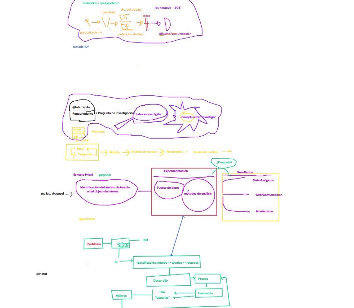

¿Qué es la Tostada HD?
Tom Wujec (conferencista, desarrollador de software e innovador) diseñó un ejercicio para favorecer la solución de problemas en el cual le pide a los participantes que en tres minutos dibujen un diagrama que indique cómo hacer una tostada. Aunque en principio parece una actividad sencilla, prácticamente ningún esquema se parece al otro. Algunos pueden ser complejos diagramas de flujo con muchos pasos, otros simples esquemas de tres pasos, unos pueden centrarse en la máquina, algunos en los insumos; las opciones son muchas. Siguiendo este ejercicio mental, es posible extrapolarlo a problemas y proyectos específicos en los que las empresas tienen dificultades para resolverlos de manera "tradicional".
La Tostada HD se plantea como un ejercicio de creatividad colectiva. Antes que proponer respuestas y soluciones, las reuniones en la tostadaHD se plantean como un espacio de catarsis e innovación.
La metodología planteada es similar a la de una "desconferencia" en la que dos participantes moderan la discusión basada en una pregunta compleja relacionada con el amplio ámbito de las humanidades digitales (p. ej. ¿Cómo se hace un proyecto en Humanidades Digitales?). La discusión se desarrolla de manera orgánica por cerca de hora y media, tras la cual, lejos de definir "una" estrategia a seguir, se rescatan los aportes que pueden apoyar de una u otra manera proyectos particulares.
Las ideas centrales de cada aporte son incluidas en una bitácora colectiva y, en ciertos ejercicios, en un tablero de dibujo virtual que puede ser consultado posteriormente.